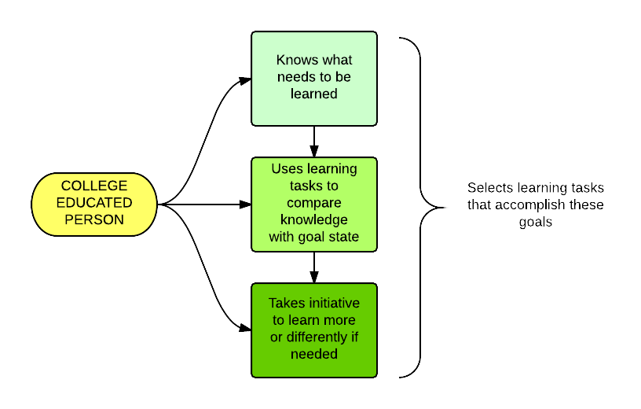
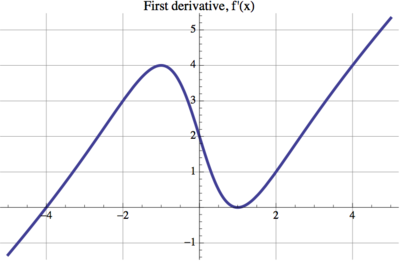

Self-Regulated Learning in the Calculus Classroom
Robert Talbert, Grand Valley State University
Twitter: @RobertTalbert / Google+: +RobertTalbert
May 4, 2015

Outline
1: Three questions
2: Self-regulated learning
3: Examples of SRL and Calculus
4: Calculus activity makeovers
Three Questions
How do you know when a student is college-ready?
How do you know when a student is college-ready in Calculus?
High school : college readiness :: College : _____ readiness
You might be college-ready if you
Set goals for learning tasks
Plan how to go about the task effectively
Direct and control your focus and behavior
Observe and monitor thoughts, actions, and emotions
Maintain and reinforce motivation for doing the task
Bring yourself back to the task if you lose focus
Are aware of how well you are performing the task
Use all of this to adjust your approach to completing the task
Self-Regulated Learning
Lifelong learning
Self-Regulated Learning

SRL is an ideal framework for defining and measuring college/career/life readiness.

Areas of regulation
Cognition (thinking skills and processes)
Motivation/Affect (perceptions and beliefs)
Behavior (efforts and actions)
Context (environment and surroundings)
Phases of regulation
1: Forethought, planning, activation
2: Monitoring
3: Control
4: Reaction and reflection
Pintrich, P. "A conceptual framework for assessing motivation and self-regulated learning in college students", Ed. Pysch. Review 16(4), 2004What we know about SRL:
SRL enhances student performance and achievement
SRL enhances the amount and depth of learning (Jensen, 2011)
SRL predicts SAT scores more strongly than IQ, parental education, or parental economic status (Goleman, 1996)
Ability to accurately self-reflect strongly correlates with actual achievement (Kruger and Dunning, 1999 and 2002)
SRL is neither explicitly taught, nor widely developed even through graduate study
SRL in the Calculus Classroom
Flipped Learning

Guided Practice
Overview
Learning Objectives
Resources
Exercises
In class:
Draw the graph of the second derivative of this function:
- What are your goals? What do you need to remember before starting? How much time/effort do you expect will be needed? How hard is this task? How might this task be applied to a real situation?
- Can you describe your thought processes? Are you working and thinking effectively?
- What tools and facts do you know? Are there good places to go that can help? Have you seen a similar problem that you've solved? Should you be working harder/smarter? Can you formulate a precise question for help? Do you need a break or a change of scenery?
- How would you evaluate thought processes, feelings, and environment? What was hardest and what would you do differently next time?
Peer Instruction
The first derivative of a function \(f\) is shown below. What are the critical values of \(f\)? Select all that apply.
- \(x = -4\)
- \(x = -1\)
- \(x = 0\)
- \(x = 1\)
Eric Mazur, peer instruction in Physics at Harvard
Ubiquitous Computing
Ubiquitous computing enables:
Authentic data and research skills
Debugging (use WeBWorK and have students find/repair errors)
Problems with not enough/too much info
Compute, then check answer Build models, then evaluate model
Exercises without solutions provided
Textbooks with minimal examples provided, e.g. Matt Boelkins Active Calculus
Simple self-reflection (Twitter, TodaysMeet, Google Keep, etc.)
Calculus activity makeovers
Take the following ordinary Calculus classroom/homework activities and remix them so that SRL is a central part of the experience.
Compute the following derivatives:
- \(\frac{d}{dx}\left[ x^3 - x + x^{-3} + 1/x\right]\)
- \(\frac{d}{dt}\left[ \cos(\ln(1/t)) \right]\)
- \(\frac{d}{dw}\left[ \dfrac{14w}{w^2 - \sqrt{w}} \right]\)
- \(\displaystyle{\sum_{n=1}^\infty \frac{n^2 + 1}{n^3 + 1}}\)
- \(\displaystyle{\sum_{n=1}^\infty \ln \left( \frac{n}{n+1} \right)} \)
Any questions?
Thank you
Robert Talbert, Associate Professor of Mathematics
Grand Valley State University, Allendale, Michigan USA
Twitter: @RobertTalbert
Google+: +RobertTalbert
Blog: http://chronicle.com/blognetwork/castingoutnines
Presentation: roberttalbert.github.io/advance